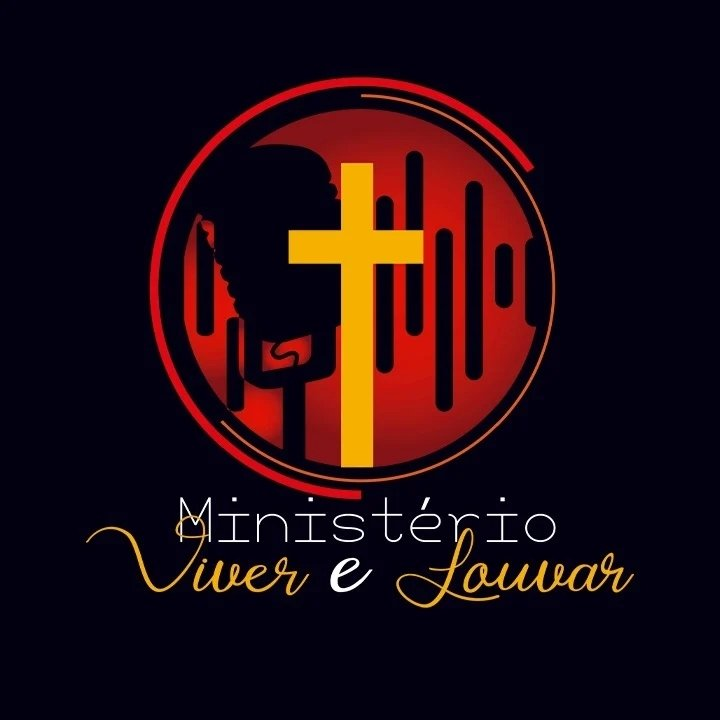

Registrar o Legado
Gravar ao vivo canções e testemunhos que expressem a fidelidade de Deus nesses 15 anos.
Especial 15 anos
Há 15 anos, carregamos o mesmo chamado: pregar a mensagem de Deus através do louvor. No dia 24 de outubro, vamos registrar essa história em uma gravação especial e queremos você conosco.

Tudo começou com um chamado no coração. Hoje, esse mesmo chamado pulsa em cada integrante do Ministério Viver e Louvar. São 15 anos na estrada anunciando o Evangelho por meio das canções, com verdade, entrega e responsabilidade.
Sabemos que louvar não é apenas cantar: é contar uma história, compartilhar vivências e preparar o ambiente para que o Espírito Santo se mova. Esta gravação celebra essa missão e aponta para as próximas gerações que continuarão levantando esse som de adoração.

Gravar ao vivo canções e testemunhos que expressem a fidelidade de Deus nesses 15 anos.
Levar essa mensagem para além das paredes da igreja, alcançando vidas em diferentes lugares.
Capacitar músicos e ministros para que o louvor continue vivo com paixão e propósito.
Nosso alvo é levantar os recursos para estrutura, captação, divulgação e ações de legado. Cada contribuição aproxima esse sonho da realidade.
0% da meta alcançada